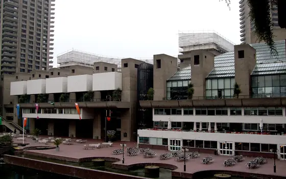
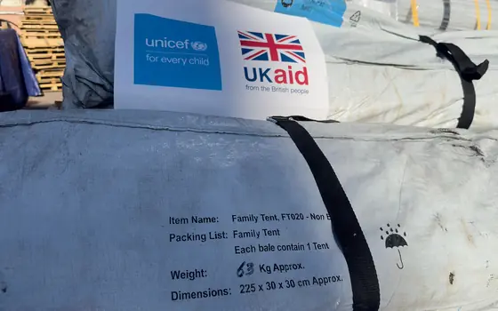

today
18:00 in Jerusalem · newest at the top

Who was Yasser Arafat?
The PLO chairman and first Palestinian president died on 11 November 2004; a wreath was laid at his Ramallah tomb on Wednesday.
Latest
Red Crescent: infections rising after Gaza floods

More than 100 vehicles burned in village south of Nablus

London Palestine Film Festival opens at the Barbican

Qalqilya protests plan to close UNRWA hospital

Two Old City youth institutions closed in five days

Why are 150,000 tents still waiting outside Gaza?

Everything, newest firstRed is todayGreen is this weekBlack is on the record
this week
The stories still growing.

Masafer Yatta: teachers detained, school raided
First winter storm swamps Gaza's displacement sites
Five solidarity actions, from Stockholm to New Jersey

Olive harvest in numbers: a record 377 settler attacks
Israel to deport 12 olive-harvest volunteers
Why do Gaza doctors want a birth-defects inquiry?

Six Jerusalem demolitions in a fortnight, case by case
discover
A story in three leaves: what happened, why it matters, and what is on the record.
explained
You ask who, what and why. The answer in one line, before the full story.
Anniversary
Who was Yasser Arafat?
The PLO chairman and first Palestinian president died on 11 November 2004; a wreath was laid at his Ramallah tomb on Wednesday.
Shelter
Why are 150,000 tents still waiting outside Gaza?
Aid agencies say entry restrictions, slow approvals and a $186.5 million funding gap keep shelter supplies outside while stocks inside run out.
Refugees
What is UNRWA, and why is it cutting services?
The UN agency for Palestine refugees faces a shortfall of about $70 million and is weighing layoffs and the closure of its Qalqilya hospital.
Maternal health
Why do Gaza doctors want a birth-defects inquiry?
Gaza recorded 260 congenital anomalies in nine months of 2026 against 184 in all of 2022, and doctors say the cause has not been established.
Aid
How does aid get into Gaza now?
Most cargo is offloaded at Kerem Shalom; the UN manifested 466 trucks in the last week of October, 28 per cent fewer than the week before.
Settlements
What is the E1 plan east of Jerusalem?
E1 is a planned settlement of 3,401 homes between Jerusalem and Ma'ale Adumim; Palestinians say demolitions at Bir al-Maskub mark its start.
Courts
Why is the UK's top court reviewing the Palestine Action ban?
The court heard an appeal on 4-5 November on whether the 2025 ban breaches free expression and assembly rights; judgment is still pending.
Hebron
What happened in Hebron's ten-day lockdown?
From 23 October to 2 November Israeli forces sealed two Hebron neighbourhoods, displacing more than 3,000 people who are now returning.


on record
Analysis and the stories that stay true after the day is over.